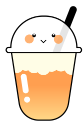

GLASS OF EMOTION
เครื่องดื่มสำหรับใจคุณตอนนี้

ชานม
ทำไมคุณถึงเหมาะกับ “ชานม”
ชานม
-
 แอลธีอะนีนในใบชา ช่วยลดอัตราการเต้นของหัวใจและความดันโลหิตที่พุ่งขึ้นเมื่อรู้สึกประหลาดใจ
แอลธีอะนีนในใบชา ช่วยลดอัตราการเต้นของหัวใจและความดันโลหิตที่พุ่งขึ้นเมื่อรู้สึกประหลาดใจ
-
กระตุ้นคลื่นสมองอัลฟา ทำให้ผ่อนคลายแต่ยังตื่นตัว ไม่ง่วงซึม
-
นมมีทริปโตเฟน ช่วยกระตุ้นการสร้างเซโรโทนิน ช่วยควบคุมอารมณ์ให้คงที่
ท็อปปิงเพื่อดูแลใจ
โฟมชีส
-
เนื้อสัมผัสนุ่ม ช่วยให้ร่างกายผ่อนคลาย
-
ทริปโตเฟนจากนม มีส่วนช่วยให้ร่างกายสงบลง
-
ไขมันในโฟมชีส กระตุ้นโดปามีนและเอนดอร์ฟิน ซึ่งเป็นสารแห่งความสุข โดยเข้ามาแทนที่อาการ
ช็อกที่เกิดจากความตะลึง
ข้อควรระวัง !
ชานม 1 แก้ว มีปริมาณน้ำตาลสูง
เพิ่มความเสี่ยงต่อการเป็นโรค NCDs ควรเลือกสั่งหวานน้อยและไม่ควรดื่มต่อเนื่อง
เป็นประจำทุกวัน

สำรวจความรู้สึกของคุณกัน!
ชั้นความรู้สึกของคุณ
รู้สึกประหลาดใจ
รู้สึกทึ่งกับสิ่งที่เกิดขึ้นอย่างกะทันหัน ที่ทำให้คุณหันไป
สนใจกับสิ่งนั้นทันที
สนใจกับสิ่งนั้นทันที
รู้สึกตะลึง
รู้สึกทึ่งและประหลาดใจ ชื่นชมสิ่งที่น่าทึ่งเป็นพิเศษ
รู้สึกเกรง
เคารพ ชื่นชม
หรือเกรงขาม ต่อสิ่งยิ่งใหญ่
สง่างาม
รู้สึกอัศจรรย์
ตกตะลึง หรือช็อกจาก
สิ่งที่ไม่คาดคิด
วิธีรับมือและโอบกอดความรู้สึกนี้
- มองเห็น 5 อย่าง รอบตัว เช่น โคมไฟ ชั้นหนังสือ โปสการ์ด ต้นไม้
- สัมผัส 4 อย่าง ที่รู้สึกได้ เช่น เก้าอี้ที่นั่ง แก้วกาแฟ กางเกงที่สวมใส่
- ฟัง 3 เสียง รอบตัว เช่น เสียงพิมพ์คีย์บอร์ด เสียงแอร์ นกร้อง
- ดม 2 กลิ่น รอบตัว เช่น กลิ่นกาแฟ เสื้อผ้าสะอาด สบู่หรือแชมพู
- ลิ้มรส 1 อย่าง เช่น รสมินต์จากยาสีฟัน รสกาแฟ หรือรสหวานจากขนม
“The moments of happiness we enjoy take us by surprise. It is not that we seize them, but that they seize us.” - Ashley Montagu